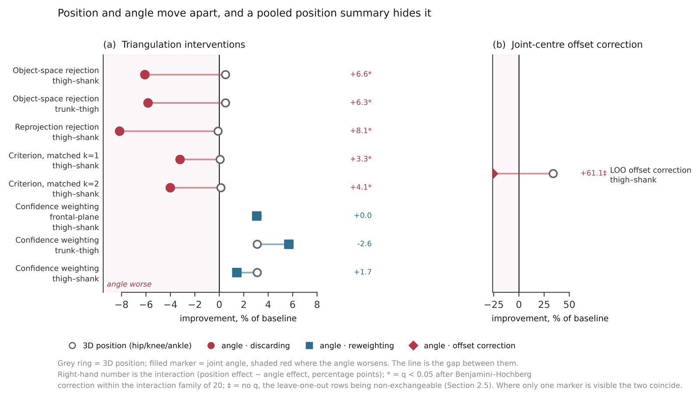
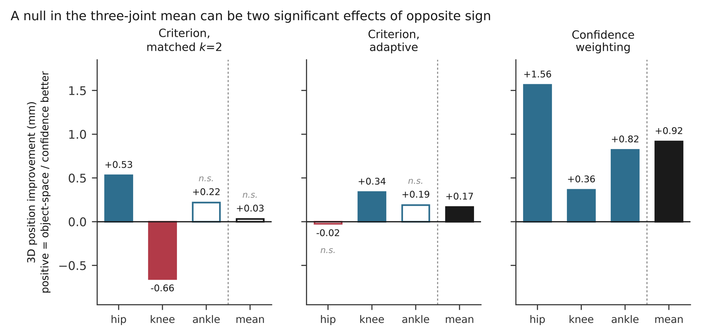
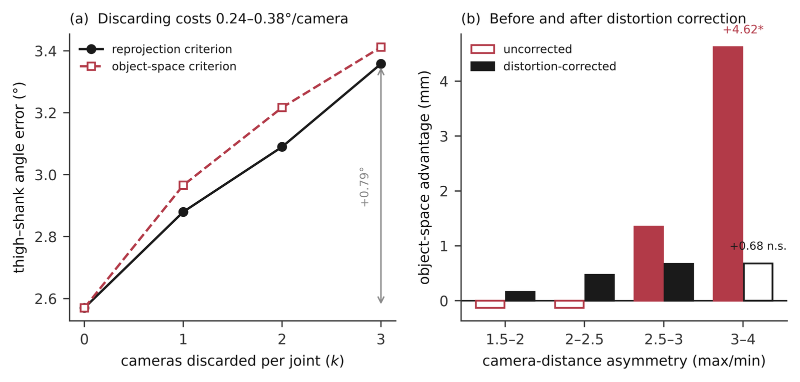

Manuscript · under revision · target: Journal of Biomechanics
Joint-centre offset dominates 3D position error and can reverse comparisons between markerless triangulation methods
The metric the field tunes markerless pipelines on is, at the hip and knee, mostly measuring something the pipeline did not cause.
Mu-Hua Wang · Hui-Ting Shih
National Yang Ming Chiao Tung University
Abstract
Markerless motion capture pipelines are commonly tuned and compared using three-dimensional joint position error measured against a marker-based reference. However, pose-estimation keypoints and marker-based joint centres are not the same anatomical construct, and at the hip and knee the two have been reported to differ by several centimetres, so it is unclear what such a comparison actually measures.
We held a single pipeline fixed and varied four triangulation decisions (confidence weighting, rejection by reprojection error, rejection by object-space error, and Gauss–Newton refinement) together with a population offset correction, one at a time, across 104 overground walking trials from 11 participants of the BioCV dataset, recorded on a nine-camera ring against a synchronised 15-camera marker-based reference.
At the hip and knee the keypoint lay 27–37 mm from the reference joint centre, which accounted for 74–81 % of squared position error within a participant and for 47–70 % when pooled across participants, compared with 2.5 mm for the largest triangulation effect measured. When each participant's own offset was subtracted, per-joint verdicts changed. Both rejection criteria appeared to improve hip position as measured, but worsened it by 1.7 and 2.0 mm once the offset was removed, leaving the estimate noisier about its own mean yet better centred on the reference. No triangulation effect at the hip, knee or ankle exceeded 2.5 mm and no single-step angle effect exceeded 0.38° on the four chains tested. All contrasts came from a single rig, task and laboratory, and the family structure was exploratory.
The offset dominates what the metric measures
keypoint to reference joint centre
At the hip and knee. Reproduced by three detectors, in the same direction for every participant.
of squared position error, within a participant
44 % at the ankle. Pooled across participants the between-participant scatter moves into the random term and the share falls to 47–70 %.
largest triangulation effect measured
An order of magnitude smaller than the offset it is being measured through.

Removing the offset moves per-joint verdicts

The reversal, stated as the paper states it
Re-expressed against each participant's own mean error, discarding worsened hip error by 1.726 mm (object-space criterion) and 1.983 mm (reprojection criterion) — leaving the hip estimate noisier about its own mean and better centred on the reference at the same time.
A difference of norms does not remove a term common to both arms, and the first-order account of what it leaves behind fails at the hip and ankle. The reversals are an empirical result and were not anticipated.

What a triangulation decision can actually buy on this rig
| Quantity | Value | Scope |
|---|---|---|
| Largest per-joint triangulation effect, hip / knee / ankle | ≤ 2.5 mm | point estimatewidest 95 % limit +3.417 mm |
| Largest single-step angle effect, four chains | ≤ 0.38° | point estimatewidest 95 % limit −0.583° |
| The offset correction — not a triangulation effect | 9.848 mm | much larger |
| The rejection claim's narrower bound | ±0.35 mm | 90 %broken on a five-camera subset of the same ring |
| Shank–foot angle at the toe, both rejection contrasts | −0.522° / −0.643° | no verdictthe pre-declared veto returns none, because the heel reverses sign |
| Cost of discarding, thigh–shank angle, threshold swept 2.5–4.0 | 0.053–0.286° | direction onlythe direction is established, the size is not |

What this does not establish
- The hip offset cannot be apportioned between the two systems. The reference hip centre is itself a regression from external landmarks whose published accuracy, 26–33 mm at 95 % certainty, is the same size as the offset reported. No absolute accuracy claim follows. The hip is both the joint where putting the target back is least well defined and the joint carrying the largest reversal, which we cannot explain.
- The family structure was exploratory. Families were not pre-specified but grew as claims required contrasts. Boundaries chosen after seeing results are a degree of freedom no correction removes.
- Most results sit at the sign-flip floor (p = 0.000977), where the test certifies that all eleven participants agreed in direction — not a magnitude.
- One rig, one task, one laboratory, every headline contrast from a single detector, and no transverse-plane kinematics.
- Two participants shape what is reported. One spans 53.7° of heading where the other ten span 1.0–14.1°, and carries the largest thigh–shank error. Another sets the worst case in twelve of the fourteen headline contrasts — though no contrast depends on it.
- Unfiltered against a 12 Hz-filtered reference. On the one filtered subset a post-hoc test could not distinguish the angle cost from zero, which is the weaker reading taken.
- Scoped to direct triangulation. A pipeline that solves inverse kinematics has no small defining point set, so model-fitting systems are outside this.
What the paper recommends instead
- Read per-joint position verdicts against the offsets they contain.
- Measure position on the joints the reported angle actually uses.
- Test any claimed dissociation as an interaction, not as a pair of separate verdicts — two separate significance verdicts do not establish one.
The authors offer these as hypotheses for confirmatory work, not as established results.
Data
The BioCV dataset (University of Bath Research Data Archive, doi:10.15125/BATH-01258; Evans et al., 2024), available on request under a data use agreement. Eleven participants (six male, five female, aged 26.2 ± 5.1 years), 104 walking trials, 6,240 frames. Keypoints detected with RTMPose; RTMO and HALPE-26 run on the same frames to test whether the offset was specific to one model. Analysis code will be released at acceptance.
Collection of the BioCV dataset was supported by CAMERA (EP/M023281/1) and CAMERA 2.0 (EP/T022523/1).